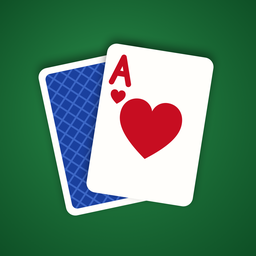

Help & Contact
Thank you for playing! This app is free forever, with no ads and no in-app purchases.
Common questions
How do I move a card?
Tap it. It moves to the best place for it. You can also drag it with your finger.
How do I get more cards?
Tap the deck (top right, or top left in left-handed mode). When the deck is empty, tap it again to go through the cards once more. There is no limit.
Can every game be won?
In Classic Solitaire (Klondike), yes, as long as “Only deals that can be won” is switched on in Settings (it is, unless you changed it): every deal has been checked by computer. FreeCell never deals the handful of games that cannot be won. Spider deals are not checked. You can still get stuck. In Klondike and FreeCell, tap Hint: it tells you when no winning moves are left and offers to take you back to a spot from which you can still win.
What is the difference between turning over 1 card and 3 cards?
With 1 card, every card in the deck is within reach, so the game is easier. With 3 cards, only every third card is available at a time — the classic challenge.
The cards are too small to read.
Open Settings and choose Large print under Card faces. Four-colour suits makes the suits easier to tell apart. Turning the device sideways often gives bigger cards.
Can I get a hint?
Tap Hint as often as you like; the card to move glows and its destination is outlined. Tap Undo to take back moves, all the way to the start.
What is the Deal of the Day?
The same deal for everyone, all day long. Play it with family or friends and compare how you did.
Can I play the same game again?
Every game shows its deal number at the top of the screen. Open Games and use Play a Deal by Number, or tap Restart This Deal.
Does the app collect my data?
No. See the privacy policy.
Contact
Questions, problems or ideas are very welcome. Please send a message here (a free GitHub account is needed to write).